Đom Đóm · bản nhóm đã thu gọn
Ca gốc trước, bốn ngách sau. Toàn bộ hình có nguồn từ Python.
Mở demo_colab.ipynb hoặc chạy python -m streamlit run app.py để điều khiển cả đàn. Trang này là kết quả đã lưu.
Chốt: 30 biến, pin 220, q=0.5, b=1, phạt bão/pin/map cố định, utility bão hòa, bỏ phạt gấp khúc.
Tổng quan các ca gốc · 30 seed/ca
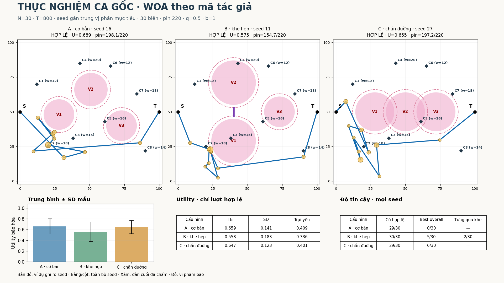
A_goc · xem cả đàn qua các lượt
Seed gần trung vị: 16. Tất cả đường xám là phương án thật, có thể còn vi phạm.
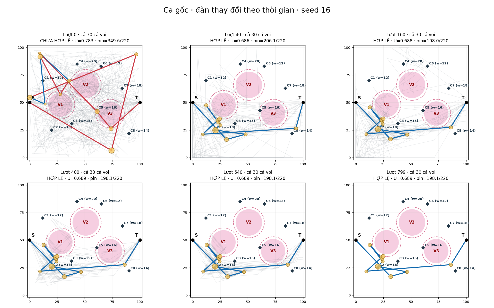
A_goc · tốt, điển hình, kém trong các lượt hợp lệ
Xếp theo phần mục tiêu -U + 0.12*L/100, không chỉ theo U. Lượt thất bại vẫn ở bảng 30 seed.
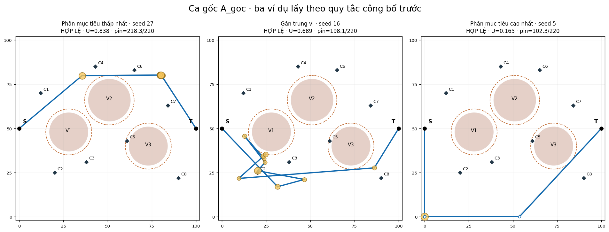
A_goc · từng trại và túi pin
Các đại lượng đều dùng đơn vị mô phỏng.
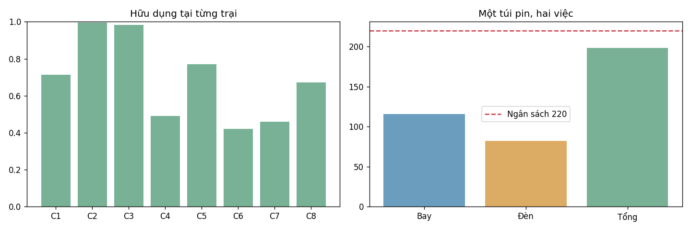
B_goc · xem cả đàn qua các lượt
Seed gần trung vị: 11. Tất cả đường xám là phương án thật, có thể còn vi phạm.
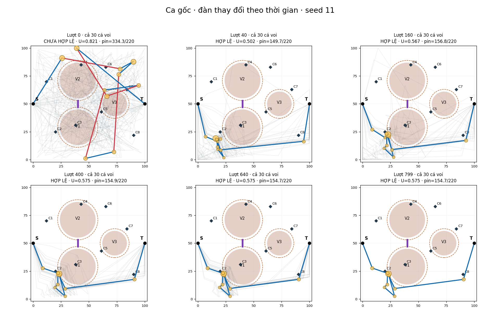
B_goc · tốt, điển hình, kém trong các lượt hợp lệ
Xếp theo phần mục tiêu -U + 0.12*L/100, không chỉ theo U. Lượt thất bại vẫn ở bảng 30 seed.
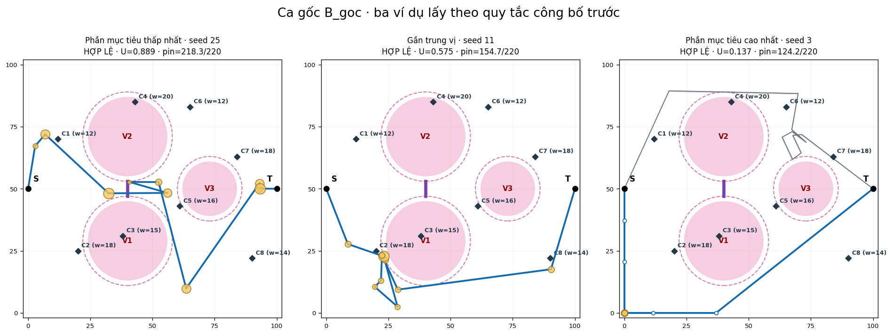
B_goc · từng trại và túi pin
Các đại lượng đều dùng đơn vị mô phỏng.
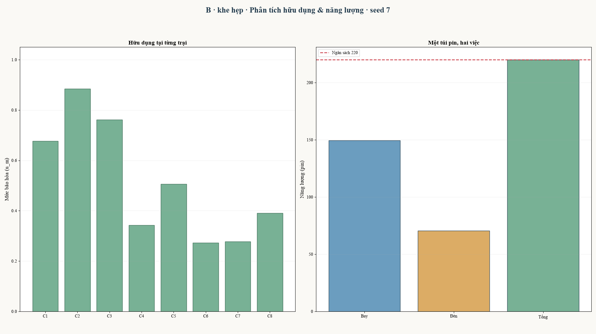
C_goc · xem cả đàn qua các lượt
Seed gần trung vị: 27. Tất cả đường xám là phương án thật, có thể còn vi phạm.
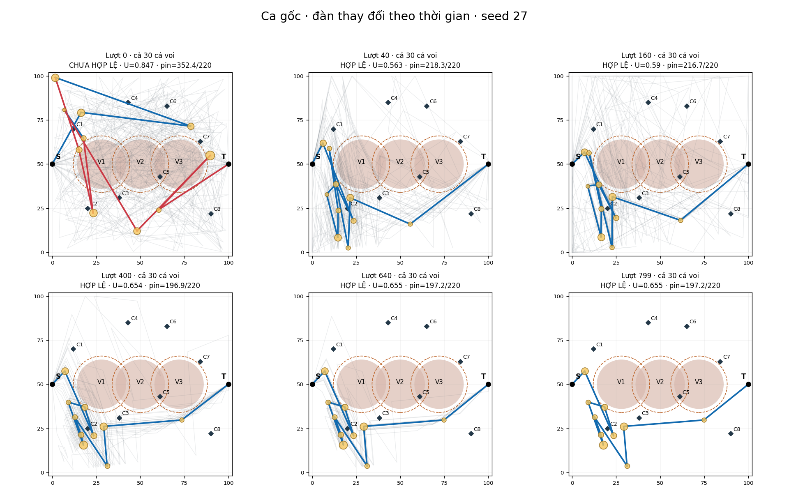
C_goc · tốt, điển hình, kém trong các lượt hợp lệ
Xếp theo phần mục tiêu -U + 0.12*L/100, không chỉ theo U. Lượt thất bại vẫn ở bảng 30 seed.
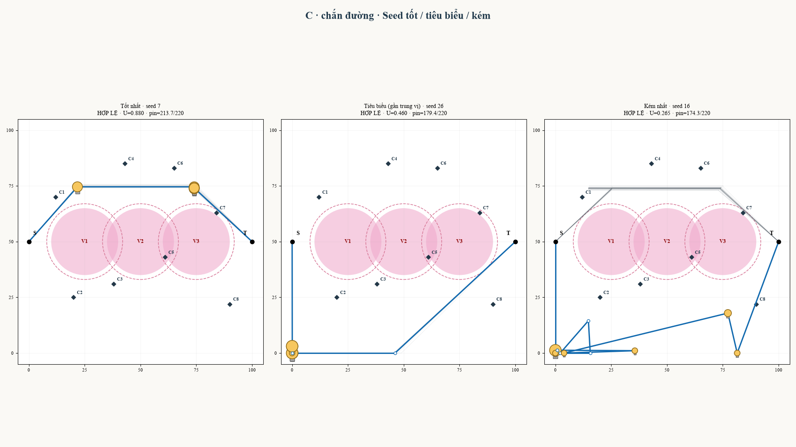
C_goc · từng trại và túi pin
Các đại lượng đều dùng đơn vị mô phỏng.
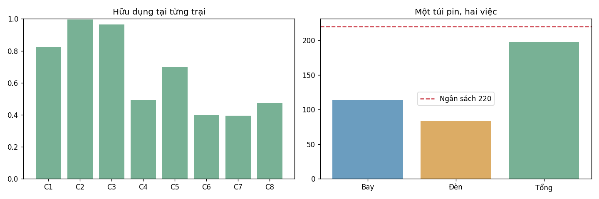
Kiểm chứng benchmark
Quadratic 1 chiều; Sphere và Rastrigin 30 chiều. Ngưỡng: 1e-8, 1e-8, 1e-6. Không gọi f máy tính bằng 0 là chứng minh tối ưu tuyệt đối.
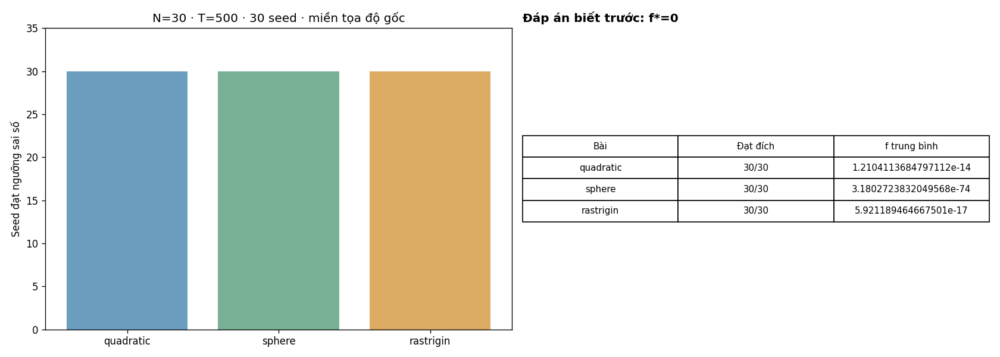
Bốn ngách đã chốt
Ngách 1 · l dùng chung và độc lập · ca A
Best overall: số lần chính nghiệm có J thấp nhất đủ điều kiện. Có hợp lệ: đã từng có ít nhất một nghiệm hợp lệ.
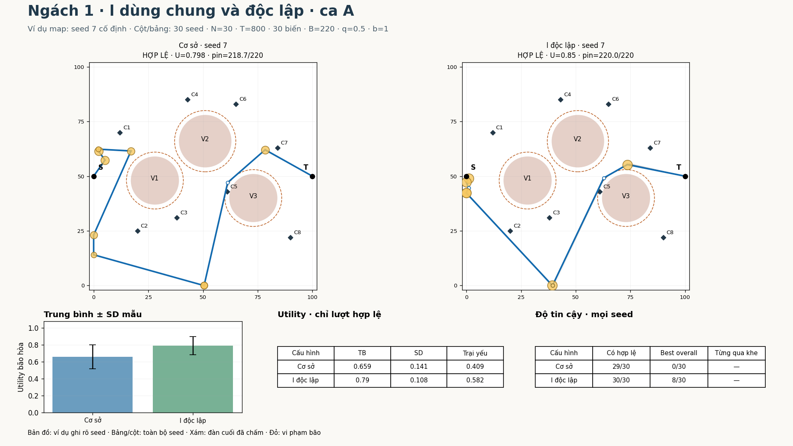
Ngách 1 · l dùng chung và độc lập · ca B
Best overall: số lần chính nghiệm có J thấp nhất đủ điều kiện. Có hợp lệ: đã từng có ít nhất một nghiệm hợp lệ.
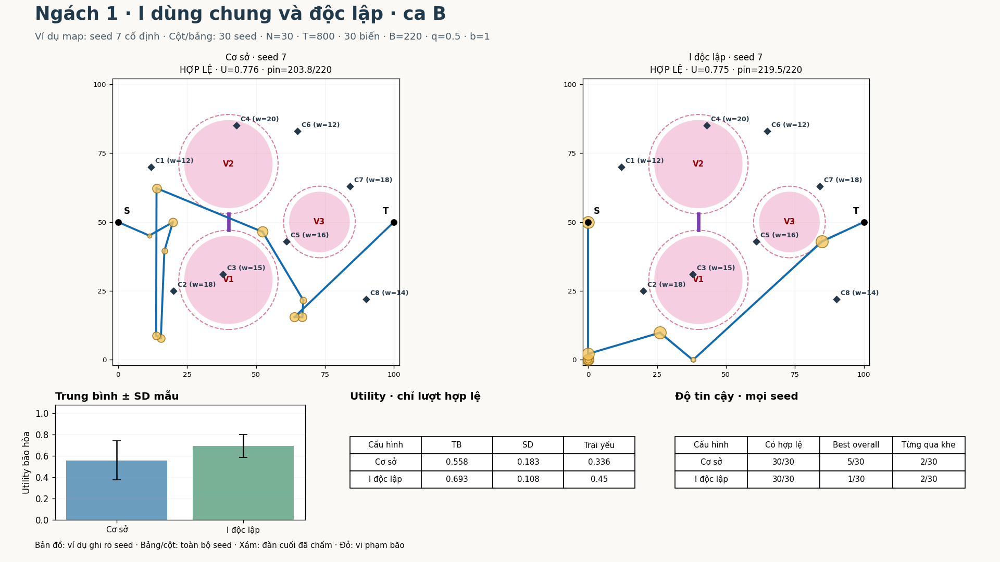
Ngách 2 · clip và re-init · ca A
Best overall: số lần chính nghiệm có J thấp nhất đủ điều kiện. Có hợp lệ: đã từng có ít nhất một nghiệm hợp lệ.
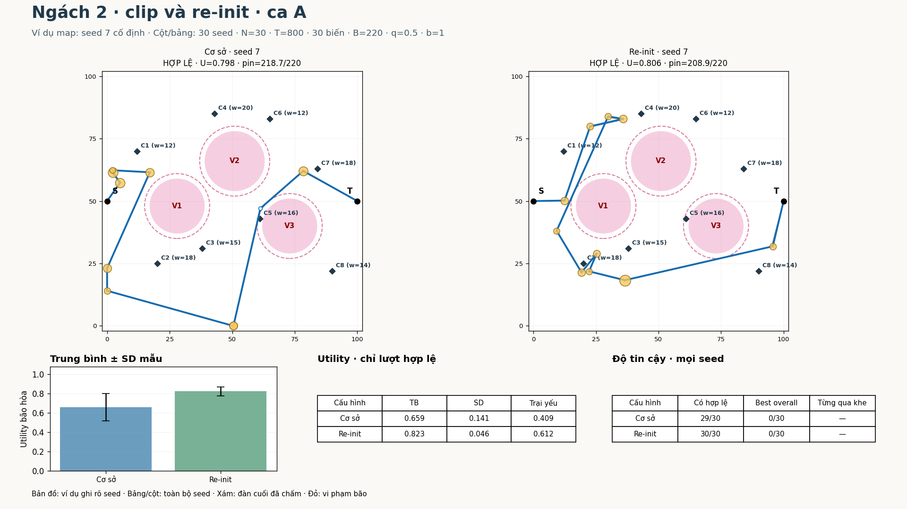
Ngách 2 · clip và re-init · ca B
Best overall: số lần chính nghiệm có J thấp nhất đủ điều kiện. Có hợp lệ: đã từng có ít nhất một nghiệm hợp lệ.
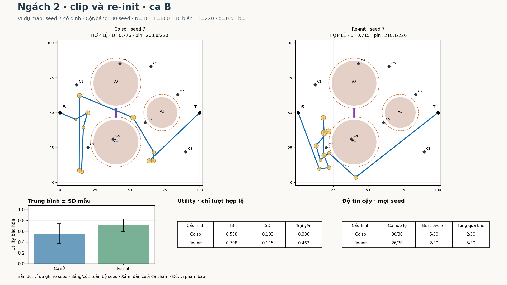
Ngách 3 · ba lịch giảm a · ca B
Best overall: số lần chính nghiệm có J thấp nhất đủ điều kiện. Có hợp lệ: đã từng có ít nhất một nghiệm hợp lệ.
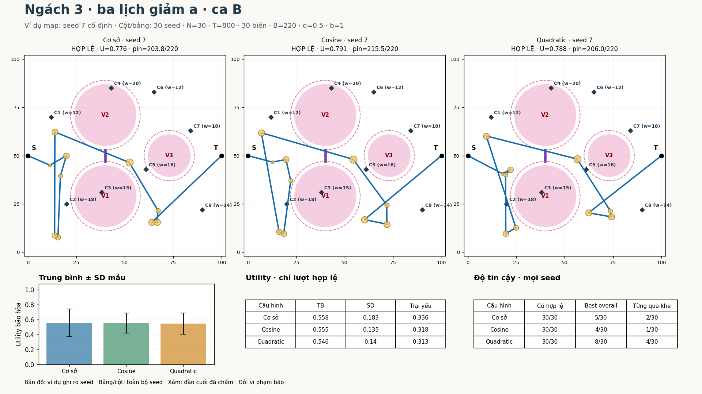
Ngách 4 · số đèn hoạt động, giữ 30 biến · ca A
Best overall: số lần chính nghiệm có J thấp nhất đủ điều kiện. Có hợp lệ: đã từng có ít nhất một nghiệm hợp lệ.
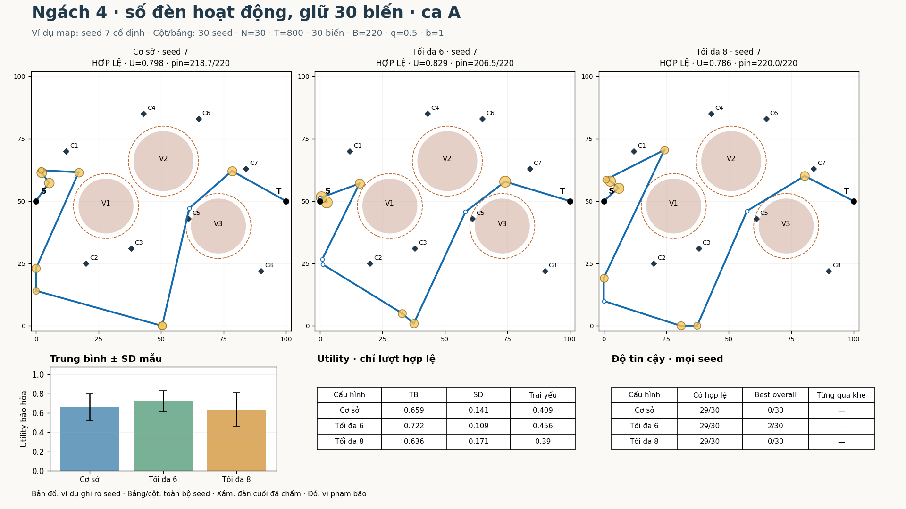
Đề bài · Lõi và mã tác giả · Bốn ngách